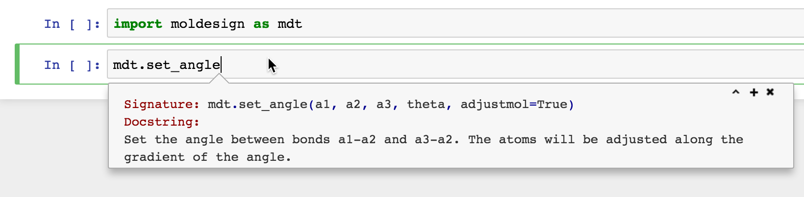
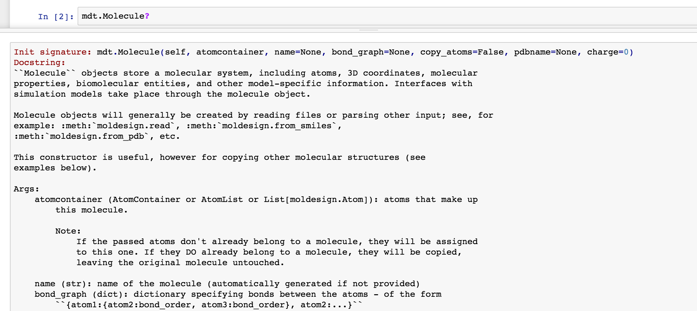

Molecular Design Toolkit: API documentation¶
These pages provide reference API documentation for the Molecular Design Toolkit.
Just getting started? We recommend trying out the tutorials and walkthroughs before diving into the API.
Quick install¶
Get the latest stable version:
$ pip install moldesign
Or get the source code on github:
$ git clone github.com/autodesk/molecular-design-toolkit
Explore the API¶
The Jupyter online documentation system is a powerful tool for discovering functionality.
To get a list of all members of a module or class, type modulename., then hit tab.

To get online documentation about a function or method, type the method’s name, then hit shift+tab
To get the complete docstring for any object, type its name then a question mark.
Get help¶
Click a link in the navigation menu (to your left) for in-depth documentation.